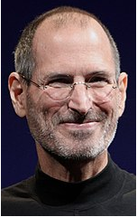

Steven Paul Jobs (ur. 24 lutego 1955 w San Francisco, zm. 5 października 2011 w Palo Alto) – jeden z trzech założycieli, były prezes i przewodniczący rady dyrektorów Apple Inc.
Był jedną z pierwszych osób, która zauważyła potencjał tkwiący w wynalazku laboratoriów przedsiębiorstwa Xerox, czyli środowisku graficznym i myszy komputerowej, dzięki czemu sukces odniosły później komputery Macintosh oraz ich graficzny system operacyjny Mac OS. Jobs był twórcą przedsiębiorstwa NeXT Inc. (zostało przejęte przez Apple Computer Inc, obecnie Apple Inc.).

Poczatki Kariery:
Jesienią 1974 r. Jobs powrócił do Kalifornii, gdzie chodził na spotkania klubu komputerowego „Homebrew Computer Club” razem ze Steve’em Wozniakiem. Rozpoczął pracę w Atari, gdzie wraz z Wozniakiem projektował gry komputerowe. W tym czasie odkryto, że zabawkowy gwizdek dołączony do płatków śniadaniowych Cap'n Crunch mógł wydawać dźwięk o częstotliwości 2600 Hz, sygnał kontrolny używany przez system telefonicznych rozmów międzymiastowych AT&T. Jobs i Wozniak krótko w 1974 r. sprzedawali tzw. niebieskie pudełka (ang. blue boxes) oparte na tym pomyśle, dzięki którym można było dzwonić za darmo. Zarobione pieniądze planował przeznaczyć na podróż do Indii w celu osiągnięcia oświecenia duchowego. Jobs pojechał tam ze swoim kolegą (a później pracownikiem Apple) Danielem Kottkem, z którym studiował na Reed College. Spotkali się tam z guru Neem Karoli Babą w jego aśramie Kainchi. Z Indii Jobs wrócił jako buddysta, z ogoloną głową i w tradycyjnym stroju hinduskim. W tym czasie eksperymentował z LSD
Apple:
W 1976 roku, wspólnie ze Steve’em Wozniakiem, założył Apple. Pierwszym komputerem ich produkcji był Apple I, sprzedawany za 666,66 USD. W 1977 r. zbudowali Apple II, który odniósł sukces na rynku komputerów domowych. Dzięki Apple II przedsiębiorstwo Apple stało się jednym z najważniejszych przedsiębiorstw produkujących komputery domowe. W 1980 r. Apple weszło na Nowojorską Giełdę Papierów Wartościowych, na rynku pojawił się także Apple III.
W 1983 roku Jobs namówił Johna Sculleya z PepsiCo, by został prezesem Apple. Zapytał go: Czy chcesz przez resztę życia sprzedawać słodzoną wodę, czy wolisz iść ze mną i zmieniać świat?
W tym samym roku Apple wydało zaawansowany technologicznie komputer Apple Lisa, który jednak nie odniósł sukcesu rynkowego. W 1984 r. firma zaprezentowała pierwszy komputer z serii Macintosh.
NeXT i Pixar:
W 1985 r. wskutek konfliktu z Johnem Sculleyem, Jobs został zmuszony do odejścia z Apple. Założył NeXT.
W 1986 roku Jobs kupił studio animacji komputerowej, będące oddziałem grafiki komputerowej przedsiębiorstwa Lucasfilm. Jobs odkupił to studio od George’a Lucasa za 10 milionów USD, z czego 5 milionów stało się jej kapitałem. 3 lutego 1986 roku przedsiębiorstwo przejęła firma Pixar, a Jobs został jej dyrektorem generalnym. W swojej historii studio Pixar wyprodukowało 24 filmów pełnometrażowych poczynając od filmu Toy Story w 1995 roku, osiągając znaczny sukces finansowy i uznanie krytyków filmowych. W 2006 roku Pixar został przejęty przez The Walt Disney Company za 7,4 mld USD w akcjach tego przedsiębiorstwa
Powrót do Apple:
Apple wykupiło NeXT w 1996 r. za 402 miliony USD, sprowadzając Jobsa z powrotem do macierzystego przedsiębiorstwa, które znajdowało się w kiepskiej sytuacji finansowej. W 1997 r. został on prezesem Apple, pracując jednakże za jednodolarową stawkę (miał jednak zyski z dywidend). Wprowadzenie na rynek iMaca znacznie polepszyło kondycję finansową przedsiębiorstwa. iMac stał się pierwszym komputerem, w którym duży nacisk położono na wygląd (choć poza tym był to także komputer o dużych możliwościach).
Pod jego kierownictwem Apple weszło także na rynek muzyczny ze swoim odtwarzaczem iPod i internetowym sklepem muzycznym iTunes Store oraz w świat telefonów komórkowych z urządzeniem iPhone, a w 2010 r. na rynek tabletów, prezentując iPada.
Smierc:
Jobs zmarł w swoim domu w Kalifornii 5 października 2011 roku około 15:00, z powodu nawrotu leczonego wcześniej nowotworu trzustki i zatrzymania oddechu. Jego śmierć została ogłoszona na stronie internetowej Apple
Przez dwa tygodnie od jego śmierci na stronie Apple było wyświetlane imię i nazwisko byłego CEO Apple, lata życia i portret w skali szarości.
Został pochowany na Alta Mesa Memorial Park